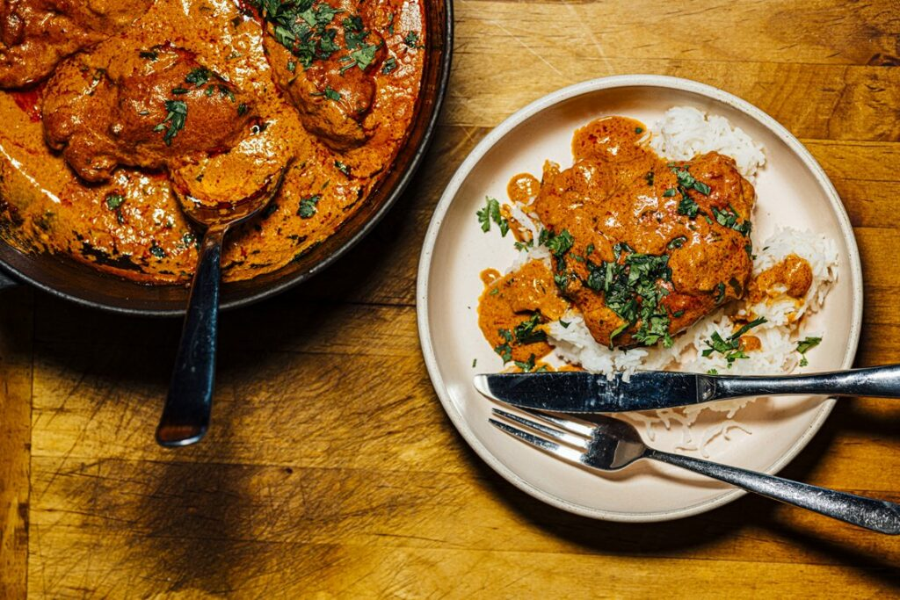
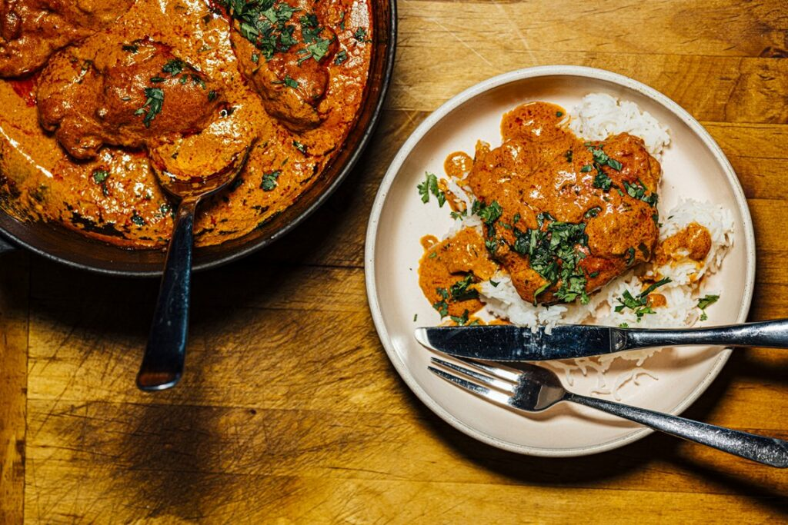
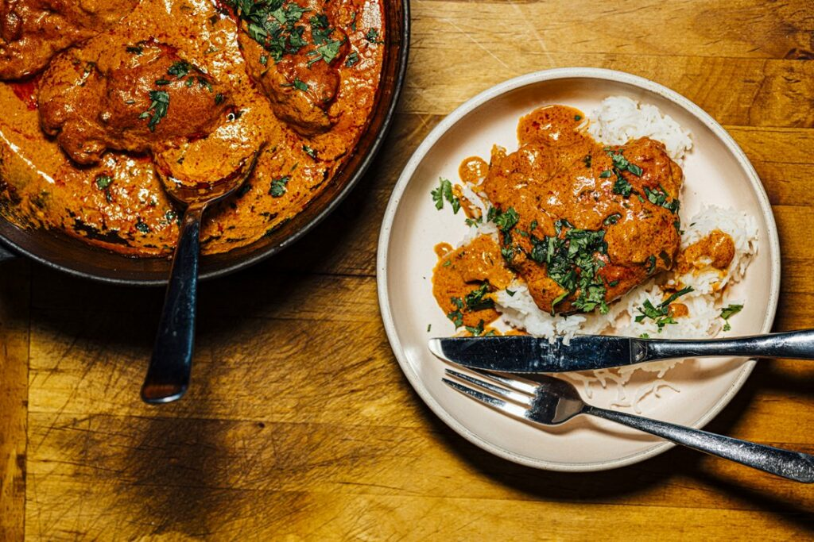
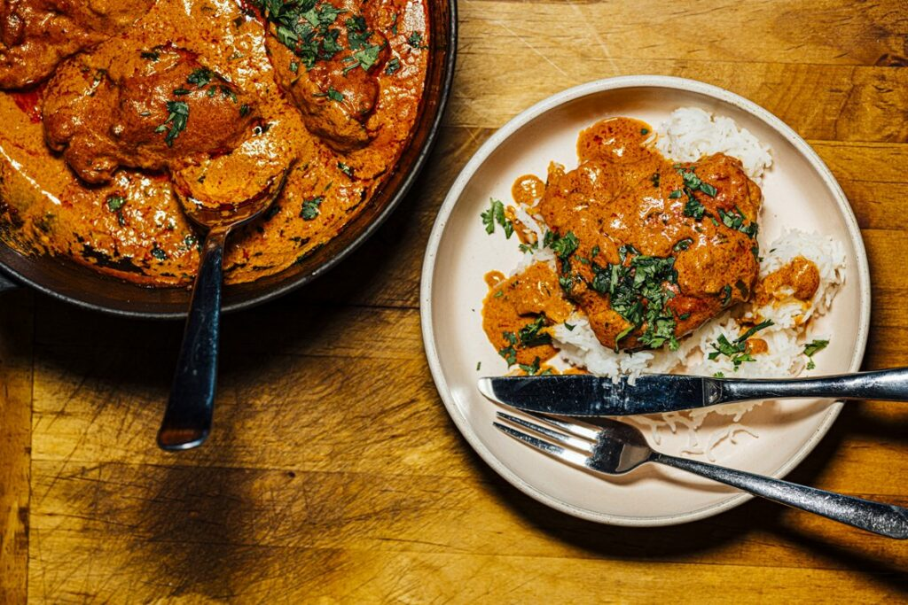

.jpeg)
Butter chicken, also known as Murgh Makhani, is a popular Indian dish renowned for its rich and creamy flavor. Originating from Delhi, it consists of marinated chicken that is cooked in a spiced tomato-based curry, enriched with butter and cream. The dish is typically prepared with boneless chicken, which is first marinated in a mixture of yogurt and spices like garam masala, ginger, garlic, and chili powder. The marinated chicken is then cooked in a tandoor (traditional clay oven) or grilled until it's partially cooked. The sauce is made by simmering tomatoes, garlic, and cardamom into a puree, which is then mixed with butter, cream, and various spices, including fenugreek leaves. The partially cooked chicken is added to the sauce and simmered until fully cooked and tender. Butter chicken is often garnished with fresh cilantro and served with naan bread or rice, making it a beloved dish in Indian cuisine and worldwide..
ingredients
In a large bowl, mix the yogurt with ginger paste, garlic paste, chili powder, cumin, coriander, turmeric, lemon juice, and salt. Add the chicken chunks to the mixture, ensuring they are well coated. Cover and refrigerate for at least 1 hour, preferably overnight, to allow the flavors to penetrate the chicken..
Preheat your grill or oven to medium-high heat. Thread the marinated chicken pieces onto skewers or place them on a baking sheet. Grill or bake the chicken for about 10-12 minutes, turning occasionally, until the chicken is cooked through and slightly charred. Set aside.
Heat the oil in a large pan over medium heat. Add the bay leaves and sauté for a few seconds. Add the finely chopped onion and cook until golden brown. Stir in the ginger paste and garlic paste, and cook for 1-2 minutes until fragrant. Add the chili powder and Kashmiri chili powder, and cook for another minute. Pour in the tomato passata and water, and bring to a simmer. Cook for about 10 minutes until the sauce thickens.
Add the grilled chicken pieces to the sauce and stir to coat. Stir in the milk, cream, butter, and dried fenugreek leaves. Simmer for another 10 minutes until the chicken is tender and the flavors are well combined. Season with salt and freshly ground black pepper to taste. Garnish with chopped fresh coriander before serving.